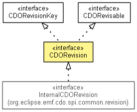

org.eclipse.emf.cdo.common.revision
Interface CDORevision
- All Superinterfaces:
- CDOBranchPoint, CDOBranchVersion, CDOIDAndVersion, CDORevisable, CDORevisionKey, CDOTimeProvider
- All Known Subinterfaces:
- InternalCDORevision
- All Known Implementing Classes:
- AbstractCDORevision, BaseCDORevision, DelegatingCDORevision, DetachedCDORevision, PointerCDORevision, StubCDORevision, SyntheticCDORevision
- public interface CDORevision
- extends CDORevisionKey, CDORevisable

Encapsulates the immutable system information of a single CDO object between two
commits in a branch and provides access to its modeled
data.
- No Implement
- This interface is not intended to be implemented by clients.
- No Extend
- This interface is not intended to be extended by clients.
MAIN_BRANCH_ID
static final int MAIN_BRANCH_ID
- Since:
- 3.0
- See Also:
- Constant Field Values
FIRST_VERSION
static final int FIRST_VERSION
- Since:
- 3.0
- See Also:
- Constant Field Values
UNCHUNKED
static final int UNCHUNKED
- See Also:
- Constant Field Values
DEPTH_NONE
static final int DEPTH_NONE
- Since:
- 3.0
- See Also:
- Constant Field Values
DEPTH_INFINITE
static final int DEPTH_INFINITE
- Since:
- 3.0
- See Also:
- Constant Field Values
PERMISSION_PROVIDER
static final CDOPermissionProvider PERMISSION_PROVIDER
- Since:
- 4.1
getClassInfo
CDOClassInfo getClassInfo()
- Since:
- 4.2
getEClass
EClass getEClass()
- Since:
- 2.0
isHistorical
boolean isHistorical()
- Returns
true exactly if CDOBranchPoint.getTimeStamp() does not return CDOBranchPoint.UNSPECIFIED_DATE,
false otherwise.
- Since:
- 3.0
isValid
boolean isValid(long timeStamp)
isValid
boolean isValid(CDOBranchPoint branchPoint)
- Since:
- 4.0
isResourceNode
boolean isResourceNode()
- Since:
- 2.0
isResourceFolder
boolean isResourceFolder()
- Since:
- 2.0
isResource
boolean isResource()
data
CDORevisionData data()
- Since:
- 2.0
compare
CDORevisionDelta compare(CDORevision origin)
merge
void merge(CDORevisionDelta delta)
copy
CDORevision copy()
- Since:
- 2.0
getPermission
CDOPermission getPermission()
- Since:
- 4.1
isReadable
boolean isReadable()
- Since:
- 4.1
isWritable
boolean isWritable()
- Since:
- 4.1
Copyright (c) 2011, 2012 Eike Stepper (Berlin, Germany) and others.